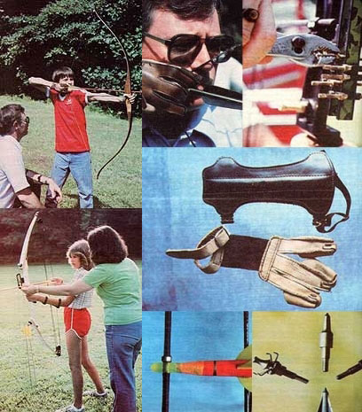

The use of bows and arrows can provide the homestead family with recreation, exercise, and more!
Even though archery has been practiced, almost unchanged, for thousands of years, recent improvements in equipment have made the sport as modern as tomorrow. Folks from 9 to 90 can enjoy this form of recreation, whose main requirement-space in which to shoot-is usually readily available to the ruralite. The activity is uncomplicated, relatively inexpensive, and provides exercise for both the muscles and the mind. Indeed, archery has been used for centuries as a vehicle for Zen. (For a discussion of this relationship, see Zen in the Art of Archery by Eugen Herrigel, Random House, 1971, $1.95.)
Additionally, after you've mastered the sport, you'll have the option of exploring the two major types of organized archery competition (field and target tournaments) as well as bow-and-arrow game stalking, which is often considered to be one of the most demanding and rewarding forms of hunting. Or, on the other hand, you may just want to learn a backyard hobby that you can enjoy in solitude or with your family.
In any case, getting started will involve acquiring access to a range, purchasing equipment, learning the basic techniques, and practicing.
Your practice range should consist of a cleared area that allows you to back up at least 40 yards from the target. (If you can find a site that permits you to shoot toward the north, you'll minimize the hassle of having to shoot into the glare of both morning and afternoon sun.) The area behind the target must be open (it's best if you keep the grass short, to ease the chore of hunting down stray arrows) and must be a "safe zone" ... that is, there should be no livestock or outbuildings there. The entire range should be positioned to eliminate the possibility that a person or a pet could pop up from around a corner and in front of an arrow. In fact, safety must be your foremost consideration, because arrows can inflict serious injury or death. Therefore, use the same care when handling your bow as you would when shooting a gun!
For a backstop, stack three rectangular hay bales horizontally. Paper plates with big, black dots inked in their centers make adequate and inexpensive (especially if you recycle used ones) targets. Decent archery equipment will cost you some money, but there are ways to reduce that expense, too. You'll need a bow, arrows and a quiver, a bow sight, an arm guard, and a shooting glove. Because the bow is the item upon which you'll base some of your other purchases, and because it will be your largest initial expense (though you'll eventually spend more on arrows), decide first what type you want.
Most modern bows can be divided into two categories: the graceful, traditional recurve and the futuristic compound bow. About ten years ago, the latter (a contraption made up of fiberglass, wood, magnesium, cables, and pulleys) arrived on the scene and took the archery world by storm. Its invention is considered the biggest advance in bow technology since the recurve began to replace the longbow centuries ago. Both types, however, are good ... the choice will depend primarily on yourbudget.
The major differences between the two are the speed at which they propel an arrow and the ease of pulling them. A compound shoots faster (which makes accuracy easier) and requires less strength to hold the string all the way back (at the point called "full draw") than does the older type of bow. The farther you pull a recurve, the more the resistance increases. With the compound weapon, however, resistance increases only to a point about two-thirds of the way to full draw, then drops off from 35% to 50%.
Since the compound first became available, archers have flocked to it by the thousand, leaving many top-quality recurves languishing in closets and classified ads. Bows that sold new for $100 to $150 only a few years ago are now bringing no more than $25 at yard sales. Yet despite the fact that there is definitely a buyer's market in recurves, you might be better off with a compound bow. Here's why.
In the days BC (before compounds) a beginning archer would often buy a bow that had only moderate resistance (measured in pounds), in order to work on developing good shooting form without straining muscles in the process. Then, once the novice gained skill, he or she often had to buy another bow, with a heavier draw weight, to use for hunting or longrange target practice. (You should, in fact, never use too heavy a bow when you're learning, since you won't be able to hold it at full draw long enough to check your form before releasing the arrow.)
So, although the initial cost of a compound bow is relatively high, such a tool will help you to learn more quickly, and because many models can be adjusted through a range of draw weights-a compound can even save you money in the long run. For example, if you buy a bow that's adjustable from 45 to 60 pounds with a 50% "let-off", you will be, with the compound at its lightest setting, holding only 22-1/2 pounds at full draw. Then, after you've mastered the basics, you can simply tighten the adjustment screws (according to the directions that come with the bow) to achieve any weight up to 60 pounds (which will still require a pressure of only 30 pounds to maintain full draw). Therefore, you won't need to buy a second bow, or get used to a different one . . . your learning bow will also be your shooting bow.
If at all possible, have a knowledgeable archer advise you on equipment before you make any purchases, or-at least-go to an archery shop or shooting range where you can talk to someone who knows how to fit you properly. However, if you don't have access to any sort of expert help, you should be able to avoid serious errors by keeping the following information in mind.
First of all, you should know that whether you'll shoot right- or left-handed is determined by your "master eye" . . . not by which hand you normally use. To find out which side you most naturally aim on, roll a sheet of paper into a 1" tube. Keeping both eyes open, hold the tube at arm's length and look through the cylinder at a small object across the room. Then, without moving the tube, close first one eye and then the other. The one with which you can see the object is your master-or dominant-eye. If it's your left eye, you should shoot left-handed . . . right eye, right-handed.
Don't despair if, for instance, you're righthanded and left-eyed. That's my situation, and I spent eight years as a mediocre righthanded archer before I got the courage to switch to the left . . . and now I wonder how I hit anything at all before!
Next, you'll need to know your draw length and how much draw weight you can comfortably handle. You can find this information by visiting a store that has a good sampling of bows. To determine your draw length, simply grip a bow in your left hand (all directions will be given for righthanded shooters, and lefties can reverse them). Hold your left arm out at shoulder level, pointing to the left. With your head turned to look at the bow, place a long arrow on the bow's arrow rest, hold the nock (that part of the arrow that goes on the string) between your index and middle fingers, and place it against the corner of your mouth. At this time you should neither put the arrow on the string nor pull the string. While you stand in a comfortable shooting position, have a friend mark the arrow at the point where it touches the part of the bow farthest from your face. The distance between that mark and the nock is your draw length.
You can determine the proper draw weight by simply trying several different bows. (If you're pulling compounds, be sure they're on their lightest settings.) You should be able to hold a bow at full draw for seven to ten seconds without shaking. If the strain has you quivering after a couple of seconds, the bow is too heavy for you. (When you try this, be sure to let the bowstring down gently. Never release the string suddenly without an arrow in it, because "dry firing"-even if done only oncecan damage a bow.)
Resist any temptation to let your ego help you choose a draw weight. Always keep in mind that archery is not a test of strength, but rather of skillful coordination between the muscles and the mind. If you get a bow that you can't handle comfortably, you won't enjoy shooting it, and you'll soon give up the sport. (Here's a general guide for choosing appropriate draw weights: preteens, 20 pounds or less ... young teenagers, 20 to 25 pounds ... adult women, 30 to 40 pounds ... and adult men, 35 to 50 pounds.)
If the string on the bow of your choice doesn't come with a nocking locator, install one. (Crimp-on units can be found at archery and sporting goods shops.) This will usually consist of a small ring of metal and rubber placed around the bowstring, indicating the proper spot to nock the arrow. To install the device correctly, use a carpenter's square or T-square to determine the point that's level with the bow's arrow rest. Place the nocking locator 1/4 inch above this point.
Your next purchase should be arrows, which may be made of wood (least expensive), fiberglass (medium-priced), or aluminum (most costly). I suggest that you get a half-dozen wooden arrows for starters. They should be an inch longer than your draw length and matched to the draw weight of your bow. In other words, if you buy a 45-pound bow, you'll need arrows with a "spine" (stiffness) of that rating, or they'll fly erratically ... and inexpensive "spineless" (not rated) arrows can break while being shot, and could injure you or someone else as a result.
Before long you'll lose some of your first batch of wooden ammunition. By that time, though, you'll probably be ready to buy fiberglass or aluminum arrows that take screw-in points. That way, you won't have to purchase separate ones for practicing and for hunting. To prevent problems later, be sure your shafts have snapon nocks ... the kind that will grab the bowstring.
To keep your arrows close at hand, you should buy-or make-aquiver. In the beginning, a hip or belt model, which holds about a dozen shafts, will be adequate. Later, you may want to switch to a largercapacity shoulder quiver.
The bow sight is another item that's become very popular in the last few years, for the simple reason that it helps people shoot better. You should have one on your bow when you begin archery . . . and keep it there. The sight is just a metal plate, attached to the bow, that holds one or several pins. When you hold the bow at full draw, your pulling hand is always at the same place (your "anchor point"), and a pin should be positioned so that it appears in the target's center.
To adjust the sight pin, shoot a couple of arrows, then move the pin toward the spot where the arrows hit. If, for example, you're shooting low and to the left, move the pin down and to the left. That has the effect of moving the arrow up and to the right.
To complete your archery tackle, you'll need an arm guard (sometimes called a "bracer") and a shooting glove. You might also, as an option, want to check out the portable, easily moved target backstops on the market that can be used in lieu of hay bales.
If you luck into finding some good secondhand equipment, you might be able to get outfitted for less than $50. By shopping carefully, it's even possible to get a new bow, six arrows, bow sight, glove, and arm guard for $100 to $125. (However, although the same items may cost more at an archery shop than in a discount house, the specialist's expert service may be worth the higher prices.)
When your archery range and equipment are all together, fit your shooting glove to the hand that pulls the bowstring . . . so that the connecting strip of elastic or leather runs along the back of the hand from the finger sleeves to the wrist strap, leaving the palm bare. The bracer goes on the inside of the opposite forearm.
Start shooting from a point only five yards from the target. That will seem ridiculously close, but the "easy" range will free you to concentrate on the mechanics of the art. (At this point, you should be concerned with the act of shooting, and shouldn't have to worry about whether or not you hit what you're aiming at.)
Stand with your left side to the target and with your feet about shoulder-width apart. Snap the nock onto the string below the nocking point, and slide the arrow up against the locator. Place the first joints of the index, middle, and ring fingers of the right hand on the string . . . index finger above the arrow and the other two below it. Make sure your fingers are spaced far enough apart so they don't touch the shaft's nock. If they do, the pressure will likely cause the arrow to fall from the bow's rest, or to rise off the rest when you pull the string.
Use the sight pin, which should be positioned at about the center of its adjustment range, and draw the string (with the arrow attached) back to your face. Keep your left arm straight out, pointing at the target. Once you're at full draw, place the tip of your right index finger against the right corner of your mouth. That's your anchor point. Move the bow until the pin appears over the target .. . relax the fingers of your right hand . . . and watch the arrow fly!
As long as you hit the backstop, don't worry (for now) about where the arrow hits. Just keep shooting from that distance until you begin to feel comfortable with the process . . . but be sure to take a break when you get tired. You may be able to shoot only a dozen arrows a day at first, because archery employs little-used back and shoulder muscles that will need to be strengthened. If you push yourself, you could develop bad shooting habits, which can be difficult to break. These include "creeping" (an unconscious tendency to permit the drawing hand to ease forward a fraction of an inch just before the release) and "snapping" (letting an arrow go before a steady aim is attained).
When most of your arrows hit in a group, indicating some consistency in your shooting, you can adjust the sight. (Remember to move it in the direction of the error.) It won't be long before you'll want to increase the distance between you and the hay bales, and-as long as you're keeping the arrows ort the target, though not necessarily in the bull's eye-it's all right to do so. Eventually, you'll probably have sight pins adjusted for 10, 20, 30, and 40 yards.
After you've mastered the basics, which are mostly physical skills, you'll find that (as is the case with all shooting sports) the real challenge of archery is mental. A good archer is the embodiment of self-discipline. To shoot well, you must be able to concentrate completely on the task at hand. It follows, then, that when you're right on target, you can-for a time-escape today's pressures and tomorrow's problems. All that exists is you and the target.
In fact, it's easy to become so engrossed that you're not completely aware of what others around you are doing. Remember, though, that a bow can be deadly, and always conduct yourself accordingly. Be aware, too, that an arrow can skip or ricochet a hundred yards or more . . . and never shoot a shaft straight up to see how far it will go, because you never know wh
ere-and on whom or what-it may come down.
One of the things I like best about archery is its versatility. Our family is constantly coming up with different activities to try with our bows.
Among the first challenges you'll probably want to tackle is attempting to shoot balloons pinned to the backstop. It's surprisingly satisfying to get to the point where you can consistently pop the one you're aiming for! If there's a breeze blowing, tie a balloon to the target with a 3" piece of string. The dancing party favor will be a real challenge to hit!
Probably the game we find the most fun is roving ... often called "stump shooting". We switch from target points to blunt-tipped arrows and simply walk through the fields and woods shooting at dirt clumps, tufts of grass, sticks, and any other safe target we see. This is about the best practice in judging distance that I can imagine. I do not, however, recommend actually shooting at stumps. Even a blunt tip could stick into a soft one, forcing you to unscrew your arrow and leave the point in the wood.
I also hunt with my bow. Most of the time I stalk deer, squirrels, and rabbits (within the legal seasons, of course), but groundhogs can provide good year-round targets. You can't even come close to keeping a 'hog population under control with a bow, but you can at least reduce the damage such critters do to your garden . . . and they're quite good to eat. (Parboil the meat for ten minutes, then barbecue it as you would chicken.)
As long as you respect the power and capability of your equipment, you'll find that archery is a great way to keep your family active, outdoors, and together . . . and you'll have taken up a sport that you can enjoy for the rest of your life.
EDITOR'S NOTE: Want to know more? Check out G. Howard Gillelan's Complete Book of the Bow & Arrow , which is available in many bookstores and libraries . . . or-for $9.95 plus 95 cents shipping and handling-from Mother's Bookshelf, P.O. Box 70, Hendersonville, North Carolina 28791. The text gives a complete history of archery . . . more information about gear, rules, and skill . . . and an all-inclusive reference for hunting, fishing, field, and target archery.
|
 TOP FROM LEFT: A youngster learns to use a recurve bow .... Place your index finger at the corner of your mouth to provide a constant anchor point .... Bow-sight pins can be adjusted vertically or horizontally to promote accurate marksmanship .... An arm guard (also called a ""bracer"") and a shooting glove are essential .... Use a target/field point (left below) for practice, a Judo point (top left) or a blunt (top right) for field roving and hunting small game, and a broadhead point (bottom) for big game .... String the arrow directly under the nocking locator .... The versatile compound bow. |
|
|